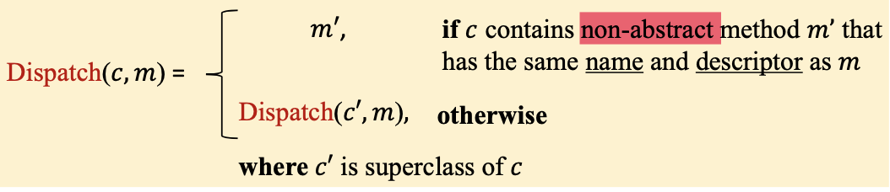
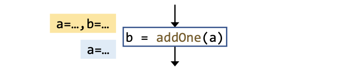

Abstract
根据
safe-approximation，过程内数据流分析Intraprocedural对所有的函数调用method call做出过度保守的假设——即所有分析结果必须safe，而根据Lattice理论这种处理会使must和may分析都变的less precise。所以引入过程间数据流分析Interprocedural Analysis，通过Call Graph来实现过程间的数据流传递，从而进一步提高分析的精度。因此如何构造这些call-graph就是过程间分析的关键环节。For Better precision, we need Interprocedural Analysis：propagate data-flow information along interprocedural control-flow edges i.e., call and return edges
Class hierarchy analysis是用来构造Call Graph的一种经典方法——也是过程间分析的基础。
CHA
从下面开始我们开始研究包含函数调用的程序——调用图反映了程序中的调用关系
calling relationships，确切的说就是一系列从调用点call-sites指向目标方法callees的边的集合，可以看出Call Graph是极其重要的程序信息。如何构造
Call Graph？鉴于OOPLs语言是目前软件领域绝对的领导者，因此本节课也主要针对Java来构造调用图。一共有四种构造算法:
- Class hierarchy analysis(CHA)
- Rapid type analysis(RTA)
- Variable type analysis(VTA)
- Pointer analysis(k-CFA)
它们的分析精度从上到下越来越准确，而分析时间也相应的越来越长，这里主要介绍第一种CHA。
Methods Calls(invocations) in Java
Static call Special call Virtual call Instruction Invokestatic Invokespecial Invokeinterface/invokevirtual Receiver objects ⨉ ✓ ✓ Target methods Static methods constructors/private instance methods/superclass instance methods Other instance methods #Target methods 1 1 ≥1(polymorphism) Determinacy Compile-time Compile-time Run-time Java的函数调用主要分为三种类型。其中
static call调用静态方法因此没有instance实例，而编译器在编译期就可以解析出函数地址。special call有三个目标函数——构造函数，私有成员函数以及父类函数，因为该调用的receiver object类型确定所以也可以再编译期确定。难点在于虚函数调用，所谓运行时绑定指的是只有在运行时才可以确定其目标函数（多态），因此构造调用图的关键就在于对虚函数调用完成构建。Method Dispatch
一个虚函数调用o1.foo(...)2在运行时根据两点被解析：
Receiver object的类型，即变量o指向的对象类型- 在
call site的函数签名，即foo(...)关于对象类型，是变量指向的实际类型——比如
A x = new B()和B x = new B()的receiver objecte类型都是B。关于函数签名signatrue的功能就是能唯一代表一个函数：
- Signatrue = class type + method name + descriptor
- Descriptor = return type + parameter types
比如
class C{T foo(P p, Q q, R r){...}}中函数foo的函数签名可以写成C.foo(P, Q, R)。接着引入函数Dispatch(c, m)来模拟运行时函数自动绑定的过程：

其中
c是receiver object的类型，而m就是call sites的函数签名。Dispatch函数在c中寻找和函数签名m相符合的非抽象函数non-abstract method，如果没有找到则去c的父类中继续找直到找到为止，该函数是CHA分析的核心。CHA
CHA是Jeffrey Dean在ECOOP上提出来的一种优化算法Optimization of Object-Oriented Programs Using Static Class Hierarchy Analysis。该算法可以根据
receiver object的声明类型（区别于实际类型）来解析虚函数调用。它需要整个程序的继承链作为信息基础，比如A a = ...; a.foo()中该算法假设变量a可以指向class A及其所有子类，据此解析出多个可能的目标方法。下面是CHA的算法:
2
3
4
5
6
7
8
9
10
11
12
13
14
15
> T = {}
> m = method signature at cs
> if cs is a static call then
> T = {m}
> if cs is special call then
> c_m = class type of m
> T = {Dispatch(c_m, m)}
> if cs is a virtual call then
> c = declared type of receiver variable at cs
> foreach c' that is a subclass of c or c itself do
> add Dispatch(c', m) to T
> return T
> }
>
这里对
Java的三种调用类型都做了解析，参数cs是程序中的调用点——即每一种调用实际发生的地方。static call可以直接根据函数签名得到目标函数；对于special call由于进行super-call调用的时候需要进一步解析父类中的函数（还不能保证父类一定存在函数需要进一步上升）所以使用了Dispatch函数。虚函数调用只需要拿到在
call-site处receiver variable的声明类型，然后对该类型以及该类型的所有子类对象做Dispatch解析即可。该算法只考虑调用点处
reveriver variable的类型和它的继承链而忽略了其他数据流和控制流信息，因此速度上非常快，但是精度一般。故其主要应用就是IDE的补全上，满足速度快贴合需求但是精度也保持在一个很好的接受范围内。Call Graph Construction
在CHA分析的基础上，我们可以设计出构造调用图
Call Graph的完整算法，该算法应用BFS的思路从entry出发对每一个method，解析该函数在所有调用点cs的目标方法Resolve(cs)直到所有的method都完成解析。
2
3
4
5
6
7
8
9
10
11
12
13
14
> WL = [m_entry], CG = {}, RM = {}
> while WL is not empty do
> remove m from WL
> if m ∉ RM then
> add m to RM
> foreach call-site cs in th m do // Resolve target methods via CHA
> T = Resolve(cs)
> foreach traget method m' in T do
> add cs ⟶ m' to CG // Add call edges to call graph
> add m' to WL
> return CG
> }
>
其中：
- WL包含即将被解析的
method- CG包含构建出来的调用边
call-edges集合- RM包含已经解析完成的
method
Inter-procedural Control-Flow Graph
构建
Call Graph的目的就是为了进一步构建ICFG，如果说CFG表示单个函数的结构，那ICFG表示的就是整个程序的结构。有了ICFG我们就可以进行过程间分析了，ICFG主要由两部分构成:
- 程序中所有函数的CFG
- 两种新加的edges
- Call edges: 从
call-site指向callees的entry- Return edges: 从
callees的返回语句指向return-site(紧跟着call-site的语句)
而这两种新加的边信息就来自于
Call Graph。对于整个程序的ICFG，只需要将函数调用语句单独作为一个Basic Block即可，其他的不变。从上图中可以看到，数据流从
call-site沿着call edges流向callees，接着从callees的返回语句流向return-site。而call-site和return-site之间还有一条边call-to-return edge是为了传递本地函数的数据流，以免这些信息跟着call graph绕远路。

Inter-procedural Data-Flow Analysis
在构建好
ICFG之后，就可以进行过程间数据流分析了。这里对比过程内
Intraprocedural和Interprocedural两种分析：
Intraprocedural Interprocedural Program representation CFG ICFG = CFGs + call & return edges Transfer functions Node transfer Node transfer + edge transfer 可以看到过程间分析比过程内分析多了一些
edge analysis。从理论上看这些edge analysis完成了函数调用过程中的跨函数数据流比如参数，返回值的传递。
- Call edge transfer: 传递参数（从call-site到entry of callee）
- Return edge transfer: 传递返回值(从return ofcallee到return-site)
而过程间分析和过程内分析的
Transfer Function相比，多了一条规则：For each call node(call-site), kill data-flow value for the LHS variable. Its value will flow to return site along the return edges.
即要
kill掉调用点语句的左值变量。
因为左值的数据流会在
callee中得到更新最终沿着return edge传递，而如果该值在call-to-return edge中继续传递下去，在merge的时候回损失精度比如常量传播中c1 ⊓ c2 = NAC。故拿常量传播来说的话，Interprocedural constant propagation要比Intraprocedural constant propagation更加精确。